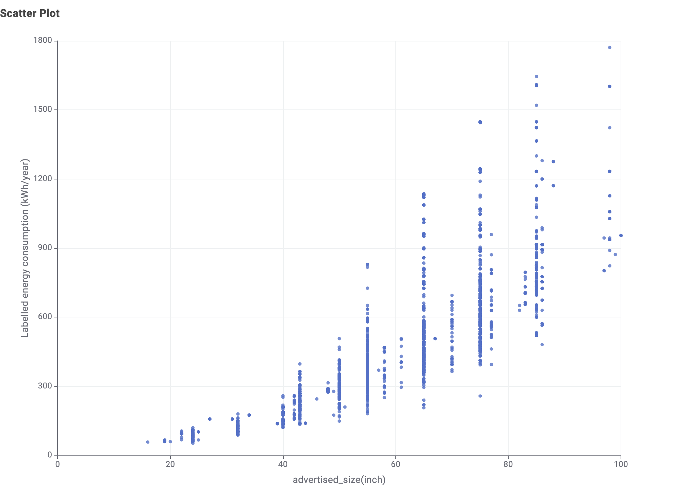
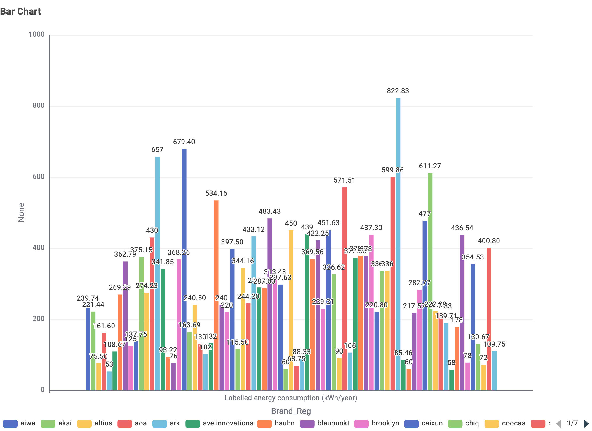

Welcome to Energy Consumption Australia
Understanding and managing energy consumption is crucial for Australian households and businesses. With rising electricity costs and environmental concerns, making informed decisions about appliance usage can lead to significant savings and reduced carbon footprint.
Why Energy Efficiency Matters
The average Australian household spends over $2,000 annually on electricity. By choosing energy-efficient appliances and understanding consumption patterns, you can reduce costs while contributing to a sustainable future.
Key Energy Statistics
- Heating and cooling account for 40% of household energy use
- Hot water systems contribute approximately 25% of energy consumption
- Appliances and electronics make up about 35% of household energy use
Energy Saving Tips
Choose Wisely
Look for appliances with high energy star ratings when purchasing new equipment.
Maintain Regularly
Regular maintenance of appliances ensures they run efficiently and consume less power.
Monitor Usage
Track your energy consumption to identify areas where you can reduce usage.
Television Energy Consumption
Televisions are one of the most common household appliances in Australia, with most homes having multiple units. Understanding their energy consumption can help you make informed purchasing decisions.
Reducing TV Energy Consumption
- Adjust brightness settings - factory settings are often unnecessarily high
- Enable power-saving modes available in most modern TVs
- Turn off completely rather than leaving on standby (standby can use 1-5 watts)
- Consider screen size - larger screens consume more power
- Check energy star ratings when purchasing new televisions
Understanding Television Energy Consumption
This section uses official Australian television energy rating data to explore how different television characteristics influence annual energy consumption. The visualisations focus on factors that matter most to consumers, including screen size, display technology, and brand-level efficiency.
Visualisation 1: Screen Size vs Energy Consumption
This scatter plot illustrates the relationship between television screen size (in inches) and annual energy consumption (kWh/year). While energy usage generally increases with screen size, the plot shows considerable variation, indicating that energy efficiency differs significantly between models.
Visualisation 2: Average Energy Consumption by Screen Technology
This bar chart compares the average annual energy consumption of televisions based on screen technology, such as LED/LCD, OLED, and Plasma. The visualisation highlights how advances in display technology have contributed to improved energy efficiency in modern televisions.

Visualisation 3: Average Energy Consumption by Brand
This bar chart presents the average annual energy consumption of television models grouped by brand available in the Australian market. It allows consumers to observe differences in typical energy performance across manufacturers, while recognising that efficiency can still vary between individual models.
About Us
Energy Consumption Australia is dedicated to helping Australian households and businesses understand and optimize their energy usage. Our mission is to provide accessible information about appliance energy consumption to empower consumers to make informed decisions.
Our Mission
We believe that knowledge is power—especially when it comes to power consumption. By providing clear, accurate information about how much energy different appliances use, we help Australians:
- Reduce their electricity bills
- Make environmentally conscious purchasing decisions
- Understand the true cost of running household appliances
- Contribute to a more sustainable future
Resources and Information
Our information is sourced from Australian energy authorities, manufacturer specifications, and independent testing. We regularly update our content to reflect the latest appliance technologies and energy efficiency standards.
All energy cost estimates are based on average Australian electricity rates, which vary by state and provider. Check with your energy retailer for specific rates in your area.